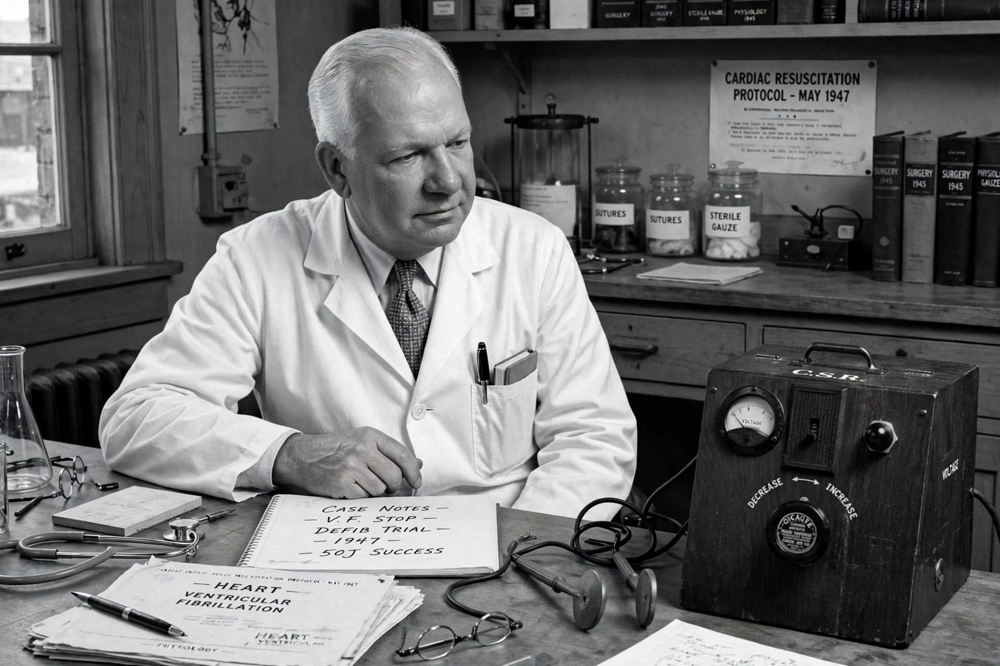

| Claude Beck | |
|---|---|
 | |
| Born | November 8, 1894 Shamokin, Pennsylvania, U.S. |
| Died | October 14, 1971 (aged 76) Cleveland, Ohio, U.S. |
| Alma mater | Franklin & Marshall College; Johns Hopkins School of Medicine |
| Known for | First successful defibrillation of the human heart; Beck's triad; first CPR training course |
| Fields | Cardiac surgery |
Claude Schaeffer Beck (November 8, 1894 – October 14, 1971) was an American cardiac surgeon who performed the first successful defibrillation of the human heart in 1947 and pioneered several operations for coronary artery disease. He spent most of his career at Case Western Reserve University and University Hospitals in Cleveland, Ohio.
Beck was born in Shamokin, Pennsylvania, and studied at Franklin & Marshall College before earning his medical degree from the Johns Hopkins School of Medicine in 1921. After surgical training at Yale and Harvard, he joined the faculty of Western Reserve University in Cleveland in 1924, where he remained for the rest of his career.
In the 1930s Beck developed procedures to improve blood supply to the heart muscle, including the Beck I operation (implanting pectoral muscle and pericardial fat onto the heart with abrasion of the epicardium) and the Beck II operation (a vein graft between the aorta and the coronary sinus). He also described Beck's triad — hypotension, distended neck veins, and muffled heart sounds — as the classic signs of cardiac tamponade.
In 1947, Beck achieved the first successful defibrillation of a human heart. During surgery on a 14-year-old boy whose heart stopped, Beck applied open-chest cardiac massage and then delivered an electric shock with a defibrillator built with colleague James Rand, using equipment developed from the work of Paul Zoll and earlier researchers. The boy recovered fully. Beck subsequently designed defibrillators and taught the first American Heart Association course on cardiopulmonary resuscitation for medical professionals.
Beck is regarded as one of the founders of modern cardiac surgery and resuscitation medicine. He died in Cleveland in 1971.
Defibrillation · Cardiopulmonary resuscitation · Cardiac surgery · Paul Zoll